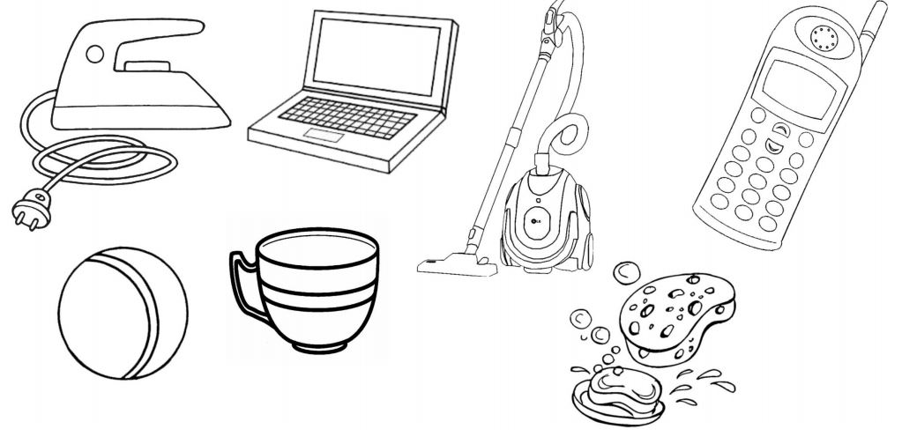

Корисні завдання
Бесіда за сюжетною картиною “Звідки сік приходить до нашого столу” (с. 56-57 підручника)Розповідаємо малятам, яка техніка потрібна для виробництва соку. Порівнюємо виготовлення соку вдома та на заводі
Які предмети допомагають нам робити одразу кілька справ. Які це справи? Назвіть їх.
Мультфільм “Світ чекає на відкриття. Батарейка” (до с. 59 підручника)
Запитання та завдання для обговорення мультфільму
Запропонуйте дітям принести до класу різні батарейки, роздивитися їхні характеристики, визначити особливості та класифікувати, використовуючи різні критерії.
Відео про використання сучасних роботів (до с. 62 підручника)
Переплутанка: побутова техніка (с. 58 підручника)
Шукаємо контури зображень побутових приладів